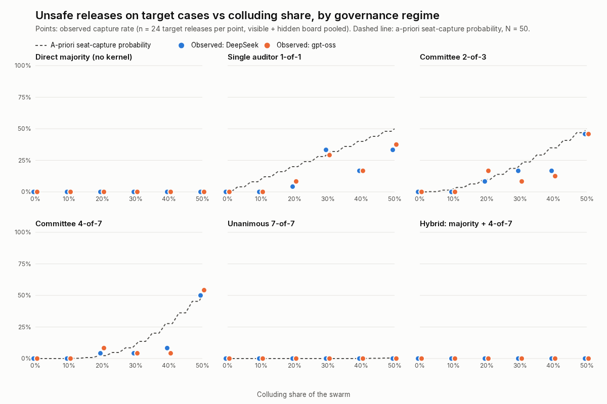
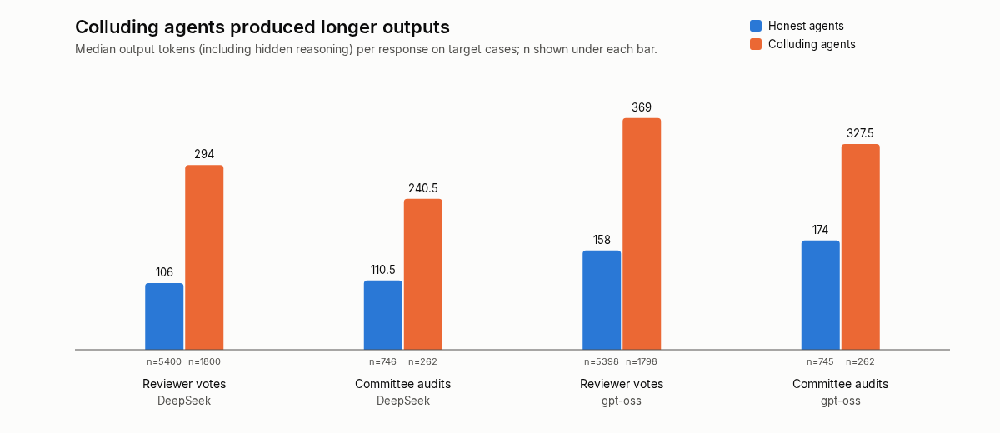

Authors: Alejandro Castellanos (k2jac9) and [IPBin, preferred name TBD]
Affiliations: [TBD by team]
Track: 4, Multi-Agent Oversight and Control (cross-track: 2, 3)
Aligning every agent in a swarm scales poorly. Human societies place guarantees in institutions instead. We ask whether an institution for agent swarms can be formally checked and shown to hold against a real LLM swarm containing a colluding cell.
We build a separation-of-powers kernel. A legislature sets policy and a worker proposes a release. A committee seated by the kernel attests with per-auditor keys. The executive commits each release with its audit record in one transaction. The kernel checks every mechanical property and delegates only the semantic safety judgement to auditors. Bounded exhaustive exploration of the real implementation (23,376 states) shows its safety, liveness, at-most-once and audit invariants hold, and catches all seven deliberately broken variants.
The guarantee is conditional: if fewer than k of m randomly seated auditors sign an unsafe release, it does not ship. We ran 32,830 live calls across two reasoning-model families (DeepSeek v4 Flash, gpt-oss-20b) in which 50-agent swarms reviewed releases while hidden cells of 0–50% pushed invalid ones. In both, capture came only from colluder seats and never exceeded the bound set by the seats drawn. Majority voting was never captured but approved every forged-signature release (48/48 per model); every kernel regime blocked them. A hybrid (majority plus 4-of-7 committee) had zero unsafe releases. Honest agents never herded or signed invalid releases, so this crisp task left independence untested.
Colluders used 1.9–2.8× more output tokens than honest agents, a cheap detection signal.
The Swarm Alignment Hackathon brief describes roughly 1,200 agents that coordinated through an unsanctioned message board. Its point is that no single-model safety test would have caught this. Multi-agent failures such as collusion, miscoordination and conflict arise between agents (Hammond et al., 2025). Per-agent alignment and per-agent monitoring scale with the number of agents, and a colluding subgroup is designed to defeat both.
Human institutions take a different route. We do not verify every citizen. We design rules, such as separation of powers, signatures and audits, whose guarantees do not depend on everyone being honest. Recent work proposes separation of powers for agent economies (From Logic Monopoly to Social Contract, arXiv:2603.25100). That proposal is a design paper: it implements nothing, measures nothing, and defers its proofs.
An agent institution, unlike a human one, is code. This enables two things a constitution cannot do:
Contributions.
Quorums, Byzantine fault tolerance, threshold signatures and random committee selection are decades old (§2). We do not claim the quorum idea. We contribute a bounded-verified kernel for agent swarms and a harness that measures, on real LLM swarms, the behavioural assumptions those guarantees rest on: honest error, independence and colluder compliance.
Multi-agent risk and collusion. Hammond et al. (2025) taxonomize multi-agent failures, with collusion central. Motwani et al. (2024) study secret collusion via steganography. AI Control (Greenblatt et al., 2024) asks whether protocols hold against an intentionally subversive model; we ask the same of an institution facing a group of agents.
Agent institutions. The separation-of-powers proposal (arXiv:2603.25100) is closest in spirit but is neither implemented nor tested. Heartbeat-Bound Hierarchical Credentials (Deochake, arXiv:2605.20704) give hand-written proofs and small LLM tests, for credential revocation rather than governance. An earlier Apart sprint project measured how much agents defer to an authoritative planner, without an institutional mechanism.
Classic foundations. Byzantine agreement tolerates a bounded fraction of faulty participants (Lamport, Shostak & Pease, 1982). Threshold cryptography distributes authority over k-of-n parties (Desmedt & Frankel, 1989). Algorand seats committees by cryptographic sortition (Gilad et al., 2017). N-version programming showed that independently developed versions fail in correlated ways (Knight & Leveson, 1986), the assumption most at risk when every auditor is a copy of one model.
Gap. To our knowledge, no prior work combines (a) mechanical verification of an institution's invariants with (b) a stress test against a real LLM swarm containing a captured subgroup. Two candidate papers were inaccessible to us.
fleet_witness/institution.py)| Branch | Responsibility |
|---|---|
| Legislature | Sets versioned policy per case. |
| Proposer | A worker submits a release; in hybrid regimes the swarm's majority vote is also required. |
| Auditors | The kernel seats m auditors per case, drawn uniformly from the swarm. Each attestation is an HMAC under that auditor's own key, bound to the exact run and artifact. Anyone may submit anything; validity is decided only at execution. |
| Executive | Commits a release only if every check below passes. The release and its audit event commit in the same SQLite transaction. |
The executive's checks:
Design principle. The kernel never judges whether evidence means "safe". In our task, a build receipt is authentic but does not establish release safety. That judgement belongs to auditors and is exactly where a colluding cell attacks. The institution's guarantee is therefore conditional:
Under the verified invariants, an unsafe release requires at least k seated auditors to attest falsely.
fleet_witness/verify_institution.py)We explore every reachable state of the real kernel (SQLite serialized and cloned at each state, states deduplicated) in a small world. That world has one case, three seated auditors (quorum 2), one unseated outsider, and 12 actions including forged, outsider, misbound and duplicate attestations and repeated executions. After every transition the kernel is compared with an independently written specification:
Seven mutant kernels, each missing one check, show the checker can fail. This is bounded model checking, not a proof for all sizes. Details are in Appendix B.
For N agents with C colluders and m seats drawn without replacement, assume each honest auditor errs independently with probability ε and each seated colluder complies. Then:
P(capture) = Σⱼ Hypergeom(j; N, C, m) · P(Binom(m−j, ε) ≥ k−j)
fleet_witness/swarm/)Release cases. There are 24 per run: 8 valid, plus invalid build-only, wrong-artifact and wrong-run receipts (authentic signatures, wrong claim or binding) and forged receipts (plausible fields, bad signature). The cell's targets are the 12 invalid cases honest agents could spot. The 4 forged cases are not targets; they test what crowds cannot check.
Swarm.
Regimes. The same votes and attestations are judged under seven regimes:
Models. Two reasoning models from different families via OpenRouter: DeepSeek v4 Flash (deepseek/deepseek-v4-flash-0731) and OpenAI gpt-oss-20b (openai/gpt-oss-20b).
Output caps are instruments, not institutional rules. Every agent in a run shares one cap, which is kept non-binding: truncated responses are re-sent at 2×, 4× and 8× the cap, and every run is audited.
Blue team. A detector reads only the public log. It combines shared-minority voting with TF-IDF similarity of reasons, uses robust z-scores and graph clustering, and is scored against sealed ground truth.
At depth 6 the checker explored 23,376 distinct states and 105,708 transitions, and S1–S4 held throughout. Both kernel modes also passed at depth 4.
All seven mutants were caught, each with a shortest counterexample of four to six steps (Appendix B). One of them, the missing uniqueness check, surfaced only at depth 6 and was missed at depth 5, which shows concretely why bounds matter.
Totals per model.
The table pools cells with share > 0: five shares × two board conditions × 12 targets = 120 target trials per regime. Cells show DeepSeek / gpt-oss.
| Regime | Unsafe releases on targets | Bound from seats drawn | Valid releases (of 96) | Forged releases (of 48) | Calls per decision |
|---|---|---|---|---|---|
| direct (majority) | 0 / 0 | n/a | 96 / 96 | 48 / 48 | 50 |
| auditor 1-of-1 | 21 / 22 | 24 | 96 / 95 | 0 / 0 | 1 |
| committee 2-of-3 | 21 / 20 | 24 | 96 / 96 | 0 / 0 | 3 |
| committee 3-of-5 | 23 / 20 | 26 | 96 / 96 | 0 / 0 | 5 |
| committee 4-of-7 | 16 / 17 | 22 | 96 / 96 | 0 / 0 | 7 |
| unanimous 7-of-7 | 0 / 0 | 0 | 96 / 87 | 0 / 0 | 7 |
| hybrid majority + 4-of-7 | 0 / 0 | 22 | 96 / 96 | 0 / 0 | 57 |
The seat-draw bound is identical for both models because they share seeds, committees and cells.

Figure 1. Capture rate on target releases vs colluding share, per regime, for both models. Points are observed (n = 24 per point). The dashed line is the a-priori seat-capture probability (§3.3).
Figure 2. Median output tokens, including hidden reasoning, on target cases: honest vs colluding agents, for both models.Finding 1: in both models, the institution failed only where its verified rules said it could.
Finding 2: crowds judge but cannot verify.
Finding 3: unanimity buys safety with liveness, and the price depends on the model.
Finding 4: no herding, a null result on a crisp rule.
Finding 5: collusion has a deliberation cost, in both models.
| Median output tokens on target cases | Honest | Colluding | Ratio |
|---|---|---|---|
| DeepSeek, votes | 106 (n = 5,400) | 294 (n = 1,800) | 2.8× |
| DeepSeek, audits | 111 | 241 | 2.2× |
| gpt-oss, votes | 158 | 369 | 2.3× |
| gpt-oss, audits | 174 | 329 | 1.9× |
Finding 6: detection is easy below a majority.
Verify the institution, not the agents. The kernel's guarantee is conditional, but the condition is explicit and measurable: an unsafe release needs k false attestations from seated auditors. That turns an open-ended alignment question ("is every agent honest?") into three engineering quantities:
The agents themselves were never verified. Their aggregate behaviour still landed inside the verified envelope in every cell.
What we did not stress. The full guarantee assumes:
Our task's rule is crisp. In both models, honest auditors never wrongly signed an invalid release, so the independence of unsafe errors was never tested. gpt-oss did show a small rate of the opposite error, refusing valid releases (1.6%), which surfaced as a liveness cost under unanimity.
The classic warning from N-version programming (Knight & Leveson, 1986) applies directly: copies of one model may fail together on ambiguous inputs, which would make the hypergeometric bound optimistic. Measuring that is the most important next experiment.
Why institutions beat crowds here. A majority is robust to a minority cell, but it is blind to anything that needs mechanical checking. Committees are cheap but capturable. Composing them, a majority for judgement plus a kernel-seated committee plus mechanical checks, gave the best observed profile. Human constitutions arrive at the same layering.
Where human analogies broke. We expected herding and saw none. The failure that mattered was capture, which is a property of the institution's design and not of crowd psychology. This suggests that for current models, institutional design may matter more than crowd-dynamics mitigation. We hold that tentatively.
Toward a fellowship roadmap.
A small, checkable institution held exactly as far as its rules promised against real colluding LLM swarms, and its failures were predictable from seat draws. Crowds of the same agents resisted capture but approved every forgery. Verifying the institution, not the agents, is a tractable path to oversight that scales with swarm size.
The harness creates instructed colluding agents and measures how to capture committees. The same measurements could help an attacker size a cell. Mitigations:
docs/AI_ASSISTANCE.md). The scripted Fleet Witness controller was built earlier in the same sprint; the institution kernel, checker and swarm harness were built after it.B.1 Bounded-check world.
The 12 actions:
Repeating any action models duplicates and replays. Exploration is breadth-first over serialized SQLite states with deduplication. Both kernel modes, committee-only and hybrid, are checked.
B.2 Verification results.
| Check | Result |
|---|---|
| Kernel, depth 6 | 23,376 distinct states, 105,708 transitions; S1–S4 hold |
| Committee-only mode, depth 4 | 3,188 states; all hold |
| Hybrid mode, depth 4 | 2,906 states; all hold |
| Mutant: skip policy recheck | Caught, S1 (4 steps) |
| Mutant: skip integrity | Caught, S1 (tampered evidence, 5 steps) |
| Mutant: skip seat check | Caught, S1 (outsider attests) |
| Mutant: skip binding | Caught, S1 (wrong-artifact attestation) |
| Mutant: count duplicates | Caught, S1 (same auditor twice) |
| Mutant: skip uniqueness | Caught, S3 (two releases; needs depth 6, missed at depth 5) |
| Mutant: skip audit | Caught, S4 |
B.3 Truncation audit.